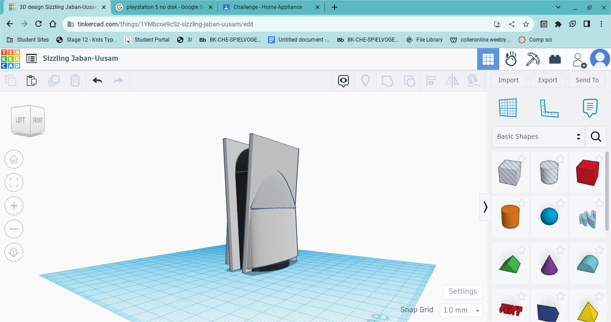
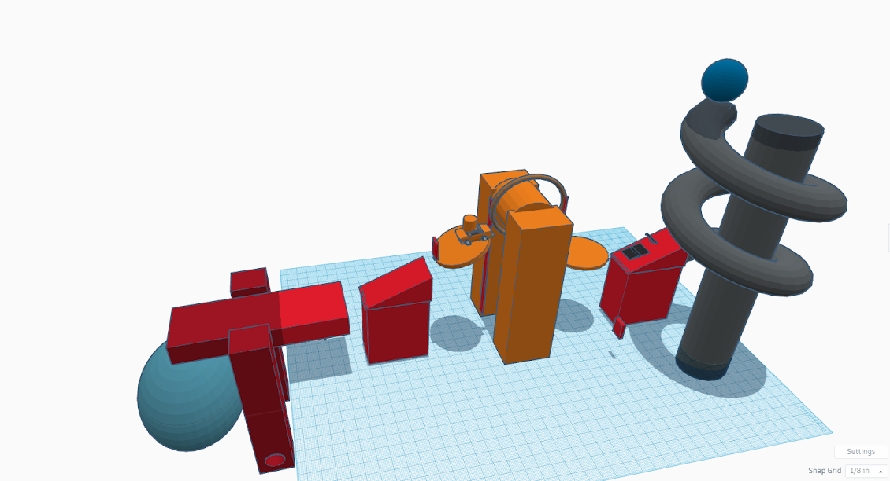
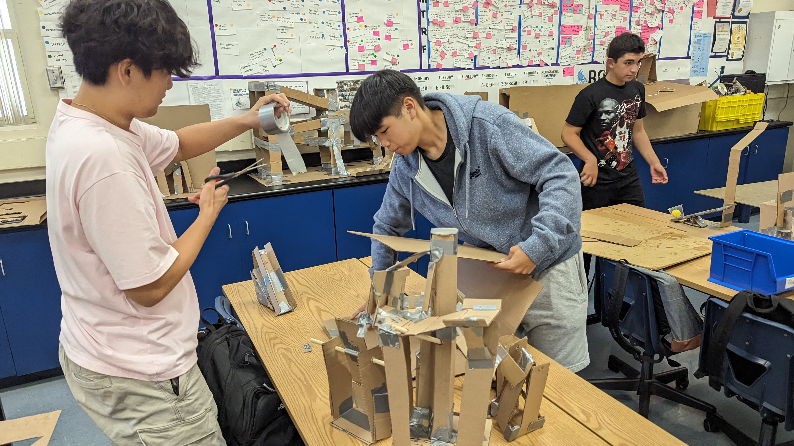
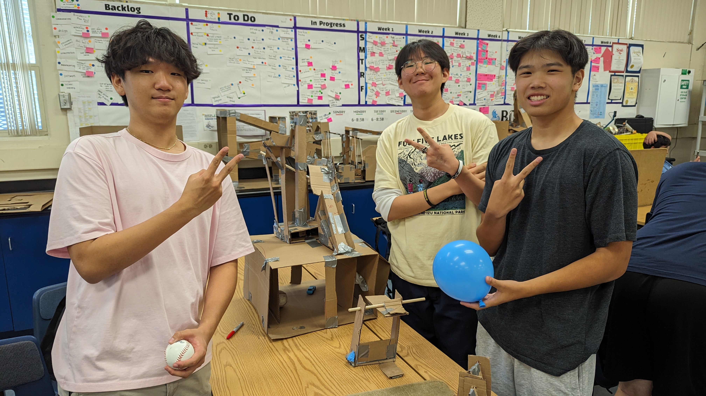
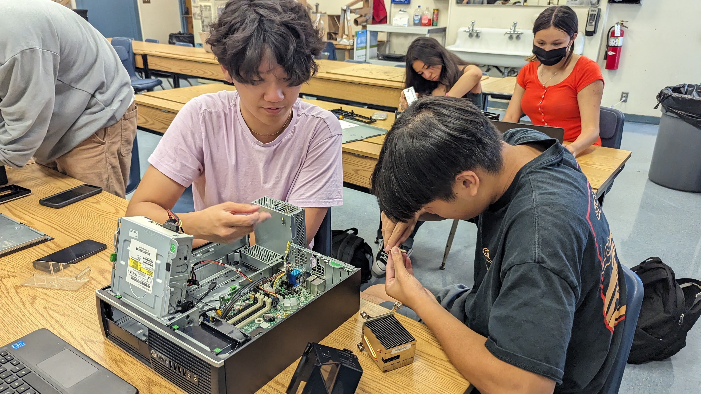
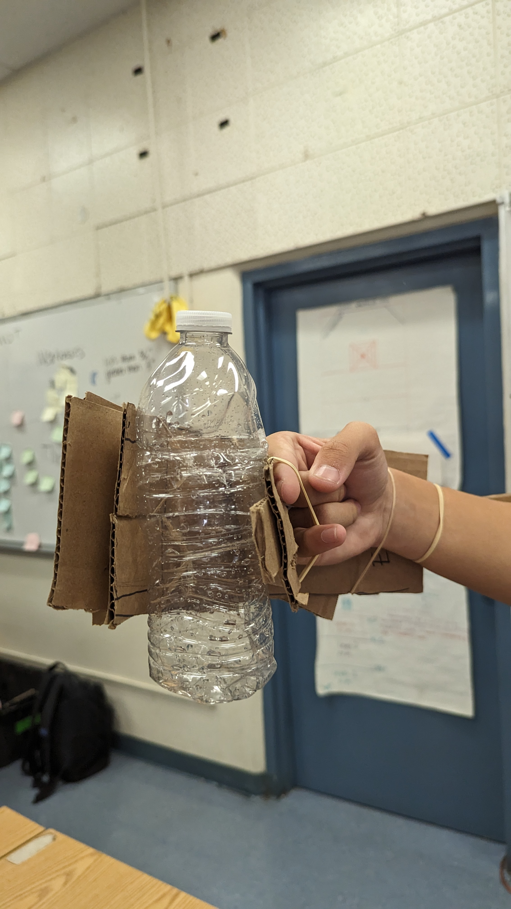
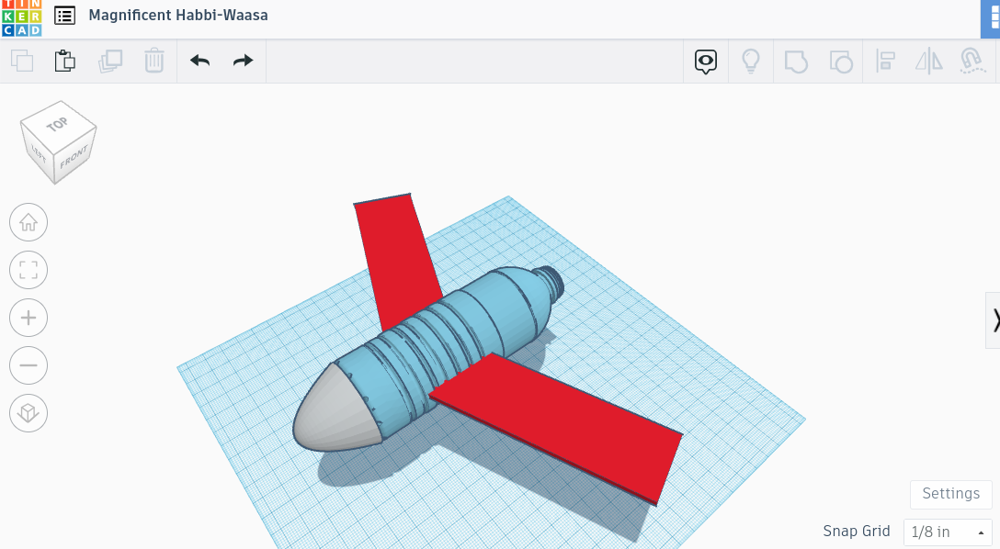
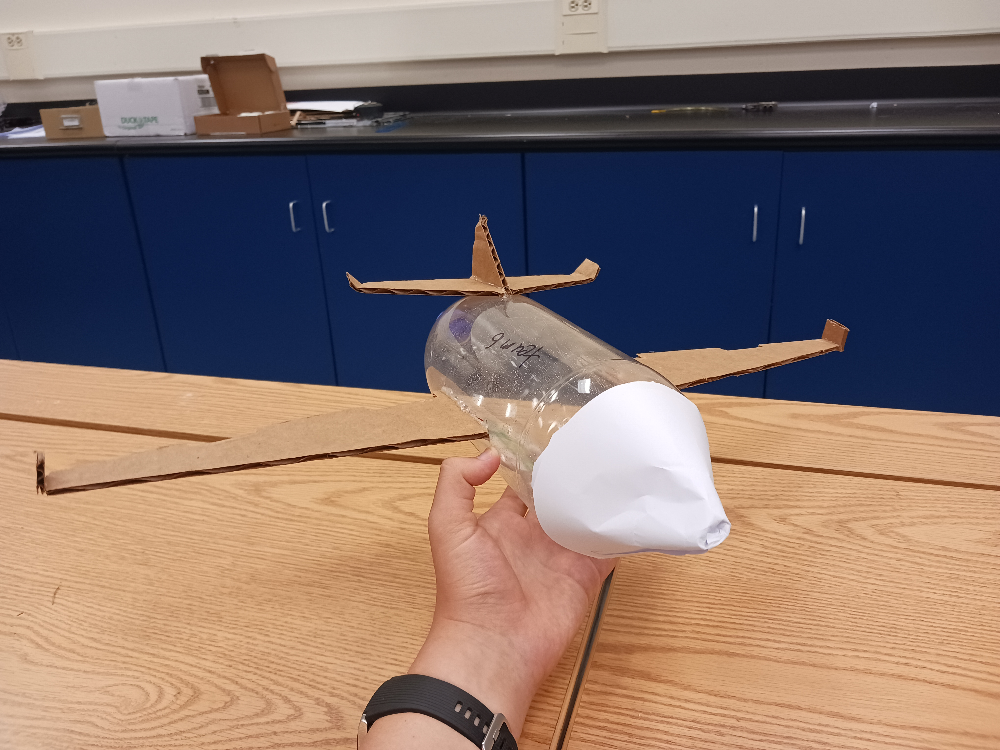

8/25/23 - This week we continued to create our website, discussed about engineering, and participated in a group challenge
- On Wednesday, we discussed a little on different types of engineering and what engineering is.
> We also talked about different ways of approaching a problem when engineering something, whether its research or looking at inspiration.
> Another thing we discussed was the difference between an invention and innovation. An invention is a new idea and creation that has never been done,
while an innovation is making something that has already been made, better.
- On Thursday, the class attempted a group challenge.
> We had to create and hold up a pathway for a marble to reach a destination. The only thing was that there were a limited amount of pipes we used to
create the pathway. Requiring the group to devise a plan that would successfully transport the marble to its destination.

- This weekend I have many homework assignments I need to do, along with many classes I'd like to get ahead in. I also am going to watch the new movie
Gran Turismo, on Sunday.
Overrall, this week was a great experience and start for starting this engineering class. I hope to have other experiences similar to what we did this week,
and I am excited for the future projects, that are to come.
A recipe for one of my favorite foods
9/1/23 - This week we continued to learn engineering processes and started to CAD
- One thing we did was going more in depth into different types of engineering, especially mechanical engineering.
> We also learned the process and safety of mechanical. We learned workplace etiquette and properness. Also, we learned the things that mechanical engineering consisted of; like mathematics, kinematics, and CAD.
> Anoher thing we started, was a rube goldberg machine. As a group we planned a machine to pop a balloo, and also requested materials for the machine.
- The challenge we participated in this week, was a CAD competition.
> Me personally, I desgined a PS5, which also happened to win the competition.
> It also gave me more experience in CAD, so I can use it and apply my skills in future projects.

Overall, this week was a great continuation of this engineering elective. I hope to continue learning and growing as a engineer, as we go through more challenges and activities in this class.
9/8/23 This week we finished CADing out Rube Goldberg Machine
- This week was mostly CADing, as we learned more about using Tinkercad.
> As we used Tinkercad, we learned new techniques that helped us make a prototype of out Rube Goldberg Machine.
> Our Rube Goldberg Machine will conist of a ball that will hit a pulley, causing a toy car to start moving, which would hit a lever, popping a balloon.
> I think the most challenging part will be using the carboard to perfectly replicate our prototype.

Overall, this week was very important, as we are now able to start working on our actual Rube Goldberg Machine.
9/15/23 - During with week, my group and I were able to start and finish our final product of our Rube Goldberg Machine
- We went through many different problems as we experimented on how to make our machine work.
> One main problem we had was that we finsihed our CAD later than others, which put us on limited time.
> We also did very poorly on our CAD, having us improvise on many of our parts of the machine
> There were many times where we had to add extra parts to out machine, so it was stable enough and was able to do its job properly
> Luckily, we were able to finish on time, with a machine that was able to pop a ballon.


Overall, this week was a great experience, as we were able to build our first engineering project and make it work, despite the many issues we encountered.
9/22/23 - This week, Wi-Fi was unavailabe in our classroom, but we were able to learn about computer engineering and even parcticipate in a few challenges.
- We parcticipated in 2 engineering challenges this week. One where we had to make a piece of paper float on water while carrying weight, and one where we had to design and cut out an letter E, with perfect dimensions.
> With the piece of paper, we were only allowed to cut the paper, fold it, but not tape it. My partner decided to not fold it, since being flat would have the most surface area, letting it float and carry weight better.
> For the letter E challenge, we learned to understand how to write proper dimensions for a blueprint, so that when someone actually proceeds in creating the E, everything should work perfectly.
- We also learned about computer engineering.
> We learned how it is a combination of both computer science and electrical engineering, as it consists of both aspects.
> What interests me is how much computers are intergrated in to everyone's daily life, whether its in phones, homes, and even cars.

Despite being restricted by internet issues, we were able to do, and learn, a lot that continued to enrich our education in engineering.
9/29/23 - This week we continued to learn about computer engineering, as we got the chance to disected a computer and study its components.
- We got the opportunity to dismantle an old computer, defining and observing the parts.
> We learned about all the components and what they do, like the RAM, CPU, PSU, and GPU.
> One thing about computer engineering that really interested me, was how each component is necessary for a computer to function. One example being how the CPU needs RAM to function, and a GPU to display video.

This week was very fun, as I enjoyed disecting and viewing all the different components, especially taking out the CPU.
10/6/23 - This week we started to learn about bioengineering and all the parts that it consists of.
- We got to learn all the cool things bioengineering do, and what they entail.
> One thing I found interesting was all the things that make up bioengineering, whether it is math, other types of engineering, or what they do to help out society
- Another thing we did was work on our own prosthetic hand
> We ran into many different problems when working on the hand, like utilizing the string and rubberbands to open and close the and.
> Next time, I think we should create a better draft before we actually go into the project, since our original plan was not what we ended with.

I had a great week, and found many things interesting with bioengineering. Also, I had lots of fun creating our prosthetic hands, even though it barely worked.
This weekend I am busy once again with family things, and sadly will not be going to homecoming, even though I really wanted to go.
10/13/23 - This week we started to learn about aerospace engineering and began on a rocket project.
- Mr. Poole presented his slides on aerospace, where I learned about all the important stuff about the type of engineering.
> We learned all the different aspects in aerospace, from airplanes to rockets.
> We learned the important parts of airplanes and what everything does to combat the forces on earth so it can fly. These forces are lift, drag, thrust, and weight.
> Lift is the force the helps the plane maintain altitude, drag is the force that pulls the plane down, thurst is a non-natural force produced by the flying object that helps it rise in altitude, and weight is the force of gravity pulling the object down.
- We were also assigned a task to create a flying object out of a 2 liter bottle
> We are supposed to use a 2 liter bottle along with water and pressurized air to create thrust. We are also allowed to use carboard to create wings that can help with lift and drag.
This is our BOM(build of materials) for the project.

So far this class has been very amazing and I have enjoyed all the hands on projects we get to participated in.
10/20/23 - This week we built a rocket, where we applied the aspects of aerospace to apply to try and make it fly.
- We also continued to learn about aerospace as we explored the different parts of an aircraft that combats the natural forces of lift and drag.
> Some forces that aircrafts produce, that combat with natural forces are thrust and weight.
> Aircrafts also have parts like wings, tails, and fins to combat lift and drag.
- We applied all of these aspects we learned about aerospace to our bottle rocket.
> For example, we attached a cone on our front end to make it slightly more aerodynamic and reduce drag.
> We also attached wings to generate lift and a tail to increase stability.
> Another thing we tried to add were flaps on the wing, but it generated too much lift, causing the rocket to spiral.
- If we had another chance to do this project, I would create a more stable cone and put less fuel in, which would help equal out the forces acting on the bottle.

Overall, this week was a very fun week, as we were able to try and make a plane, manipulating natural forces that act on a flying object. Sadly, our ideas did not work on the plane, but we will definitely learn from this experience.
10/20/23 - This week we learned about enviromental engineering and what those engineers do to help the planet become more cleaner.
- For enviromental engineering, I was amazed on the different things that humans do to keep the planet clean and healthy.
> One thing that was pretty cool, was the process that water goes through to become clean. I was suprised of how black water can turn into white water, and how most of our home water is grey water.
> Another thing I was suprised by, was all the pollution factories and cars create and how it damages the planet.
- One of our activities this week was to clean black water as much as we could.
> We used a mixture of cotton and rocks to try and filter the water.
> We were successful enough to clean out the larger gunk and some of the color. We got it to a point where it looked like watered down apple juice.


This 3 day weekend I am volunteering for two events, to hopefully get some community service hours. I also might watch the new FNAF movie with some friends. Another thing I might do is start to play fortnite and valorant again.